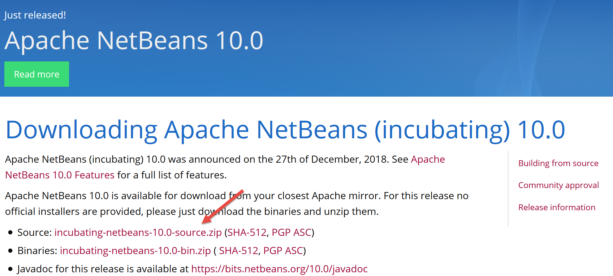

2. Instalação de um ambiente de trabalho
Os scripts foram escritos e testados no seguinte ambiente:
- um ambiente de servidor web Apache / SGBD MySQL / PHP 7.3 denominado Laragon;
- o ambiente de desenvolvimento NetBeans 10.0 IDE;
2.1. Instalação do Laragon
O Laragon é um pacote que reúne vários programas:
- um servidor web Apache. Iremos utilizá-lo para escrever scripts web em PHP;
- o SGBD MySQL;
- a linguagem de script PHP;
- um servidor Redis que implementa um cache para aplicações web:
O Laragon pode ser descarregado (março de 2019) na seguinte morada:


- A instalação [1-5] gera a seguinte estrutura de diretórios:

- em [6], a pasta de instalação de PHP;
Ao iniciar o [Laragon], é apresentada a seguinte janela:

- [1]: o menu principal do Laragon;
- [2]: o botão [Start All] inicia o servidor web Apache e o SGBD MySQL;
- [3]: o botão [WEB] apresenta a página web [http://localhost], que corresponde ao ficheiro PHP [<laragon>/www/index.php], em que <laragon> é a pasta de instalação do Laragon;
- [4]: o botão [Database] permite gerir o SGBD e o MySQL com a ferramenta [phpMyAdmin]. É necessário instalar esta ferramenta previamente;
- [5]: o botão [Terminal] abre um terminal de comandos;
- [6]: o botão [Root] abre o Explorador do Windows com a pasta [<laragon>/www] selecionada, que é a raiz do site [http://localhost]. É aqui que devem ser colocadas todas as aplicações web geridas pelo servidor Apache do Laragon;
Vamos abrir um terminal Laragon [5]:

- em [1], o tipo de terminal. Estão disponíveis três tipos de terminais em [6];
- em [2, 3]: a pasta atual;
- em [4], introduz-se o comando [echo %PATH%], que apresenta a lista de pastas exploradas durante a procura de um executável. Todas as pastas principais do Laragon estão incluídas neste caminho dos executáveis, o que não aconteceria se abríssemos uma janela de comandos [cmd] no Windows. Neste documento, quando for necessário introduzir comandos para instalar um determinado software, esses comandos são geralmente introduzidos num terminal do Laragon;
2.2. Instalação do IDE NetBeans 10.0
O IDE NetBeans 10.0 pode ser descarregado na seguinte morada (março de 2019):
https://netbeans.apache.org/download/index.HTML

O ficheiro descarregado é um ficheiro zip que basta descompactar. Depois de instalar e iniciar o NetBeans, é possível criar um primeiro projeto PHP.

- em [1], selecione a opção «File / New Project»;
- no [2], selecione a categoria [PHP];
- no [3], selecione o tipo de projeto [PHP Application];

- em [4], atribuir um nome ao projeto;
- em [5], escolha uma pasta para o projeto;
- em [6], selecione a versão do PHP que descarregou;
- em [7], selecione a codificação UTF-8 para os ficheiros PHP;
- em [8], selecione o modo [Script] para executar os scripts PHP no modo de linha de comandos. Selecione [Local WEB Server] para executar um script PHP num ambiente web;
- no [9,10], indicar o diretório de instalação do interpretador PHP do pacote Laragon:

- selecione [Finish] para concluir o assistente de criação do projeto PHP;

- em [11], o projeto é criado com um script [index.php];
- em [12], escreve-se um script PHP mínimo;
- em [13], executa-se o [index.php];

- no [14], os resultados na janela [output] do NetBeans;
- Em [15], cria-se um novo script;
- no [16], o novo script;
O leitor poderá criar todos os scripts que se seguem em diferentes pastas do mesmo projeto PHP. Os códigos-fonte dos scripts deste documento estão disponíveis na seguinte estrutura de pastas do NetBeans:

Os scripts deste documento estão localizados na estrutura do projeto [scripts-console] [1]. Iremos utilizar também as bibliotecas PHP, que serão colocadas na pasta [<laragon-lite>/www/vendor] [2], em que <laragon-lite> é a pasta de instalação do software Laragon. Para que o NetBeans reconheça as bibliotecas de [2] como fazendo parte do projeto [scripts-console], temos de incluir a pasta [vendor] [2] no ramo [Include Path] [3] do projeto. Vamos configurar o NetBeans para que a pasta [<laragon-lite>/www/vendor] [2] seja incluída em qualquer novo projeto PHP e não apenas no projeto [scripts-console]:

- no [1-2], acedemos às opções do NetBeans;
- no [3-4], configuramos as opções do PHP;
- em [5-7], configura-se o [Global Include Path] a partir do PHP: as pastas indicadas em [7] são automaticamente incluídas no [Include Path] de qualquer projeto PHP;

- no [9], acede-se às propriedades do ramo [Include Path];
- no [10-11], as novas bibliotecas exploradas pelo NetBeans. O NetBeans explora o código PHP dessas bibliotecas e memoriza as suas classes, interfaces, funções… para poder oferecer ajuda ao programador;

- em [12], um código utiliza a classe [PhpMimeMailParser\Parser] da biblioteca [vendor/php-mime-mail-parser];
- em [13], o NetBeans sugere os métodos desta classe;
- em [14-15], o NetBeans apresenta a documentação do método selecionado;
O conceito de [Include Path] é, neste caso, específico do NetBeans. O PHP também possui este conceito, mas, à primeira vista, trata-se de dois conceitos diferentes.
Agora que o ambiente de trabalho foi instalado, podemos abordar os conceitos básicos do PHP.